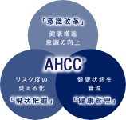
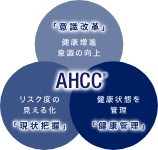

健康経営は健全度を見える化から。

ASICS HEALTH CARE CHECKとは

アシックスでは、「スポーツで培った知的技術により、質の高いライフスタイルを創造する」をビジョンとして掲げ、「健康快適」を事業領域の1つとして設定しています。昨今高齢化社会や健康に関する意識が高まる中、当社の研究所がもつ「人に対する測定・分析技術、運動プログラムに対する豊富な知見」を最大限活用し、人々の健康を総合的にサポートするサービスで主に企業や自治体に向け展開しています。心身の健康状態を測定し、人々の健康度を数値化・分析することで、状態に合わせた健康推進プランを提供する総合サービスとなります。
本サービスは、身体能力や認知機能など最大38項目を測定し、年齢や性別に合わせた評価を10段階で行い、「体力」「脳活」「歩行」の3つを年齢で表し、総合的な健康度を「健全年齢」として評価。またアシックスの研究データから、疼痛リスクの予測や測定結果に応じて無理なく継続可能なトレーニングメニューを100種類の中からパーソナライズ化して、専用アプリで提供しています。
いくつかの自治体で本サービスを展開してきた中で提供した「運動プラン」は、専用アプリを通じたものだけでなく、ランニング・ウォーキングなどの各種運動セミナー、スポーツイベントの企画・実施、運動に必要なシューズ選びのサポート（足形計測やシューズのフィッティング）などリアルでのコンテンツの提供も実施しています。
「測定」「結果提示」「運動プランの提供」の３つの健康サイクルを回すことで人々の行動変容を促し、健康的で豊かなライフスタイルの実現に貢献することを目指します。
私たちは健康維持・向上、そして健康寿命延伸のために、「健康診断」と「健全評価」の両輪が必要だと考えています。アシックスヘルスケアチェックでは、測定と評価から「健全評価」を数値化し、正しい気付きに導き理想的な健康サイクルをつくります。
 

健康経営は健全度を見える化から。
健康経営って
なにから
始めればいい？
社員の体力測定や
体力診断って
できないかな？
在宅勤務で
運動不足が
心配
福利厚生を
充実させたい
将来の
健康状態が
気になる
私たちは健康維持・向上、そして健康寿命延伸のために、「健康診断」と「健全評価」の両輪が必要だと考えています。アシックスヘルスケアチェックでは、測定と評価から「健全評価」を数値化し、正しい気付きに導き理想的な健康サイクルをつくります。
私たちは健康維持・向上、そして健康寿命延伸のために、「健康診断」と「健全評価」の両輪が必要だと考えています。アシックスヘルスケアチェックでは、測定と評価から「健全評価」を数値化し、正しい気付きに導き理想的な健康サイクルをつくります。
私たちは健康維持・向上、そして健康寿命延伸のために、「健康診断」と「健全評価」の両輪が必要だと考えています。アシックスヘルスケアチェックでは、測定と評価から「健全評価」を数値化し、正しい気付きに導き理想的な健康サイクルをつくります。
私たちは健康維持・向上、そして健康寿命延伸のために、「健康診断」と「健全評価」の両輪が必要だと考えています。アシックスヘルスケアチェックでは、測定と評価から「健全評価」を数値化し、正しい気付きに導き理想的な健康サイクルをつくります。